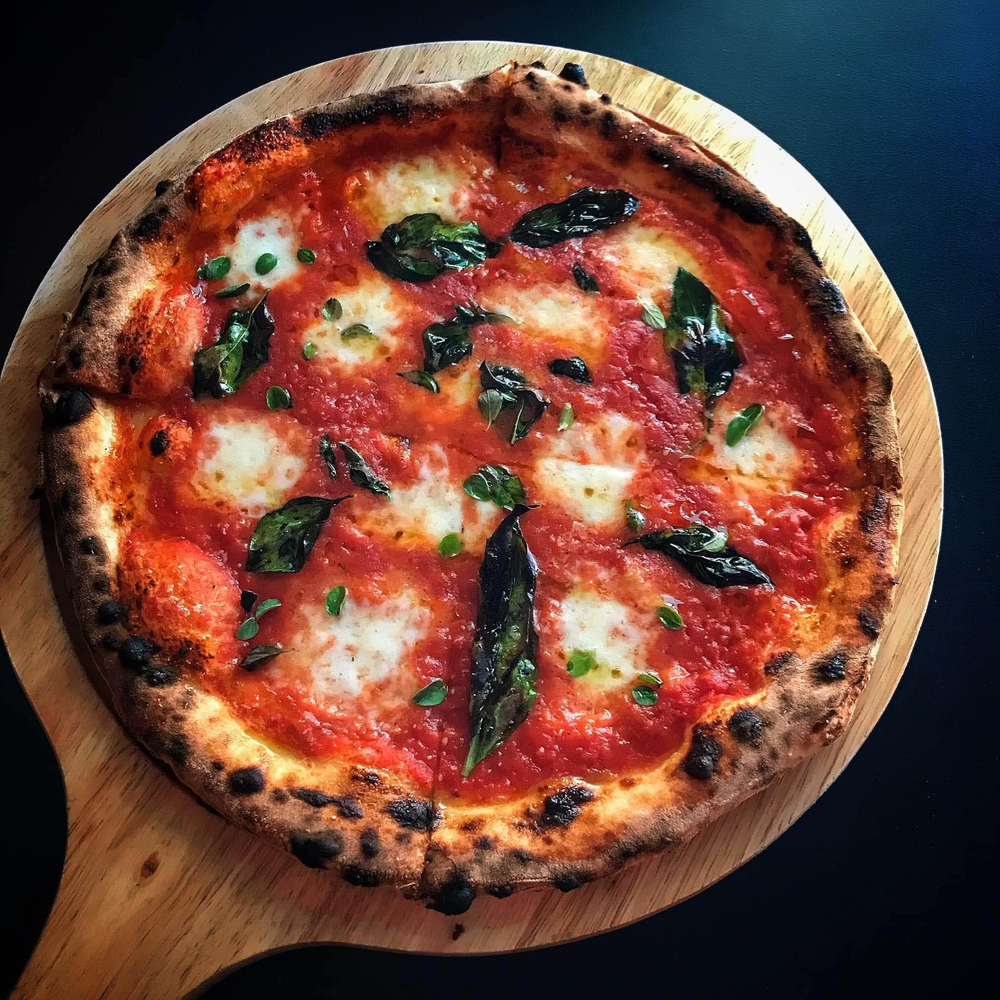

Home page
Pizza

Image from LBB
Ingredients
- 2 cups flour (00 flour if possible)
- ¾ cup warm water
- ½ tsp yeast
- 1 tsp salt
- Tomato sauce (simple crushed tomatoes + salt)
- Fresh mozzarella
- Fresh basil
- Olive oil
Steps
- Mix water + yeast → add flour + salt → knead till smooth.
- Cover and let it rise for 6–8 hours (or overnight for best flavor).
- Stretch by hand (don’t use rolling pin) into a thin round.Stretch by hand (don’t use rolling pin) into a thin round.
- Spread tomato sauce → add mozzarella → drizzle olive oil.
- Bake at highest temperature (250–300°C) for 7–10 min(or 90 seconds in a super-hot oven/OTG if possible).
- Add fresh basil on top after baking.
Quick Tips
- Keep toppings minimal (that’s the real Neapolitan style)
- Slightly burnt spots = good (authentic “leopard” crust)
- Softer center, airy edges = perfect result